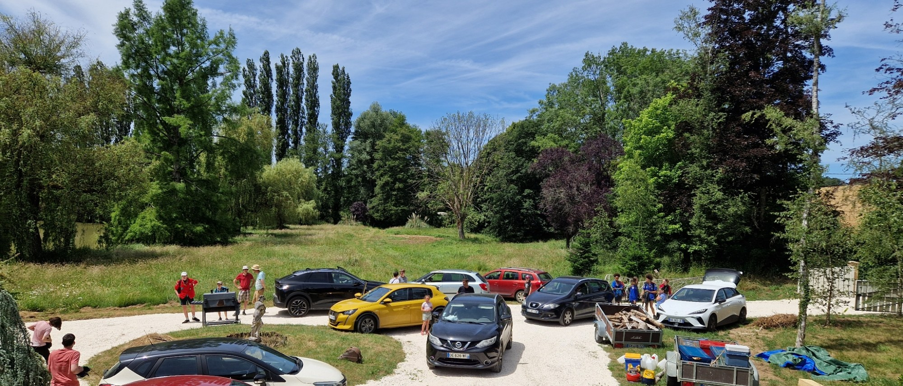

La fête du groupe
Pour cette dernière rencontre de l’année, jeunes, chefs et familles se sont retrouvés afin de faire revivre les souvenirs de l’année, clore l’imaginaire des Minimoys et préparer les camps d’été.
Cette dernière rencontre avait un parfum particulier. Quelques absents se faisaient sentir, fin d’année oblige, mais tous les chefs étaient présents et de nombreux parents avaient rejoint le groupe pour partager ce moment de clôture.
Le grand jeu de la mémoire
Le grand jeu invitait les jeunes à replonger dans les souvenirs de toute l’année. Guidés par la voyante minimoy, ils sont partis à la recherche des moments oubliés, avec l’aide des reporters chargés de retrouver les traces, les récits et les images des aventures vécues depuis la rentrée.
Cette quête a permis de refermer l’imaginaire de l’année. Après avoir accompagné les Minimoys pendant de longs mois, les insectes ont été définitivement renvoyés dans leur époque. Une dernière mission réussie avant de quitter cet univers devenu familier.
Une tente pour préparer le camp
Sur le lieu de la rencontre, une belle tente surélevée sur pilotis, montée par Pierre, attirait les regards. Elle permettait notamment de préparer les bleus à leur prochain camp et de leur donner un avant-goût des installations qu’ils pourront construire et utiliser cet été.
Les camps se préparent
La rencontre s’est achevée avec les familles réunies autour de la présentation des camps à venir. Malgré quelques déboires techniques au moment de projeter les rétrocamps, les chefs ont pu revenir sur les aventures passées et présenter les projets de l’été.
Une belle façon de mesurer le chemin parcouru au cours de l’année, tout en se tournant déjà vers les prochaines aventures sous la tente.
Guillaume, Responsable de groupe